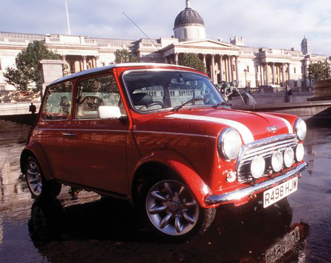
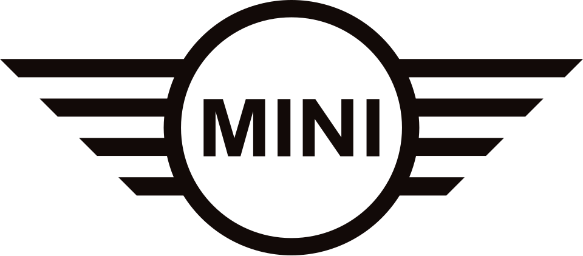

홈 > 브랜드 매거진 > 미니
미니
미니는 작은 크기를 약점이 아니라 개성과 태도의 언어로 바꾼 자동차 브랜드다. 미니의 디자인은 실용성만을 말하지 않는다. 작음, 경쾌함, 도시적 감각을 결합해 차체 자체를 하나의 캐릭터처럼 인식시킨다.
산업 분야 기술·전자 · 공개 등급 편집 검수 · 브랜드 평가 4.7 ★


한눈에 보는 브랜드
미니는 작은 크기를 약점이 아니라 개성과 태도의 언어로 바꾼 자동차 브랜드다. 미니의 디자인은 실용성만을 말하지 않는다.
작음, 경쾌함, 도시적 감각을 결합해 차체 자체를 하나의 캐릭터처럼 인식시킨다.
브랜드 관점
미니는 작은 크기를 약점이 아니라 개성과 태도의 언어로 바꾼 자동차 브랜드다. 미니의 디자인은 실용성만을 말하지 않는다.
작음, 경쾌함, 도시적 감각을 결합해 차체 자체를 하나의 캐릭터처럼 인식시킨다.
시작과 성장
미니는 1959년 영국의 자동차 회사인 브리티시 모터 코퍼레이션이 설립한 자동차 브랜드이다. 글로벌 소형차 브랜드 미니는 1990년 로버 그룹을 거쳐 1994년 BMW 그룹에 인수되었다.
2001년부터 미니 특유의 디자인에 BMW의 기술력이 더해진 신형 미니를 생산하고 있다.
브랜드 아이덴티티
미니는 ‘클래식하고 성능 좋은 소형차’로서 경제성과 기술력을 모두 갖추며 프리미엄 소형차 시장을 선도하고 있다. 또한 고객 만족도를 향상시키는 맞춤형 서비스와 독창적인 마케팅 전략을 통해 브랜드 로열티를 높이고 있다.
제품과 서비스
미니의 제품과 서비스는 기술·전자 범주에서 해석됩니다.
현재 상태
산업: 기술·전자
타임라인
BI/CI 변천사
함께 읽을 브랜드
BMW는 이동수단을 만드는 회사를 넘어, 주행 감각과 조형 언어를 함께 설계하는 디자인 브랜드다. BMW의 강점은 성능 수치만으로 설명되지 않는다. 운전자가 차를 보...
 기술·전자 · 매거진 완성뱅앤올룹슨
기술·전자 · 매거진 완성뱅앤올룹슨뱅앤올룹슨은 오디오를 가전제품이 아니라 공간 속 오브제로 다루는 브랜드다. 소리의 품질뿐 아니라 제품이 놓이는 방식, 재료, 형태, 조작 경험까지 디자인의 일부로 통...
애플에게 혁신은 일회성 전략이 아니라 조직의 습관처럼 반복되는 브랜드 행동이다. 애플은 새로움을 캠페인으로만 말하지 않는다. 제품, 인터페이스, 매장, 발표 방식까지...
 기술·전자 · 편집 검수Spotify
기술·전자 · 편집 검수Spotify스포티파이는 2006년 스웨덴 스톡홀름에서 설립된 세계 최대 규모의 음악 스트리밍 서비스다. 무료 광고 기반 티어와 유료 프리미엄 구독을 결합한 프리미엄(freemi...
Ai
Air up
기술·전자 · 편집 검수Air up에어업(air up)은 독일 뮌헨에 본사를 둔 음료 스타트업으로, 향(스멜)만으로 맛을 입히는 리필형 물병 시스템을 만든다. 물에는 설탕·첨가물·향료를 전혀 넣지 않...
AI
AIR Studios
기술·전자 · 편집 검수AIR StudiosAIR 스튜디오는 비틀스의 프로듀서 조지 마틴이 1965년 동료 프로듀서들과 함께 설립한 영국의 전설적인 녹음 스튜디오다. 정식 명칭 어소시에이티드 인디펜던트 레코딩...
 기술·전자 · 편집 검수Analog
기술·전자 · 편집 검수Analog애널로그(Analog)는 엣지 AI(Edge-AI)를 기반으로 인간의 잠재력을 확장하는 데 초점을 맞춘 기술·전자 분야 기업으로, 스페인 바르셀로나 기반 디자인 스튜...
BE
BEA
기술·전자 · 편집 검수BEABEA는 1967년에 기록된 Airlines 계열의 브랜드 아이덴티티 사례입니다. FHK Henrion가 아이덴티티 작업의 디자이너로 기록되어 있습니다. 공개 섹션...